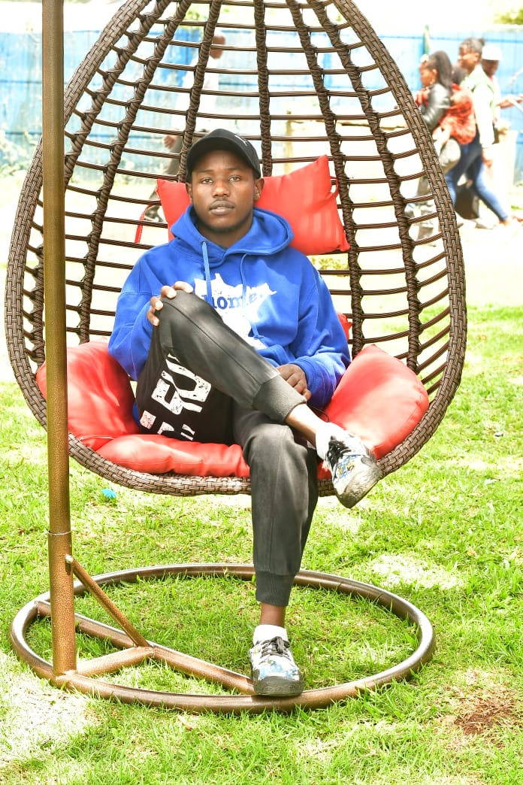

<section class="about-section">
  <div class="container about-grid">

    <aside>
      <!-- Profile photo -->
      
      <h3>Titus Kimwole</h3>
      <p class="role">Computing Student, Year 2</p>
    </aside>

    <div>
      <h2>About Me</h2>
      <p>"I am Titus, a university student pursuing consumer computing and related studies. My background combines analytical thinking with practical troubleshooting skills, especially in computer hardware, networking, and system management. I am passionate about connecting theory with real-world applications, exploring technology, business innovation, and multidisciplinary learning</p>

      <h3>Technical Skills</h3>
      <ul class="skills-list">
        <li>Computer Networking (OSI, TCP/IP, subnetting)</li>
        <li>HTML5 & CSS3</li>
        <li>Cisco Packet Tracer</li>
        <li>Database management</li>
        <li>AI$machine learning</li>
      </ul>

      <h3>Education</h3>
      <table>
        <thead>
          <tr><th>Qualification</th><th>Institution</th><th>Year</th></tr>
        </thead>
        <tbody>
          <tr><td>BSc Computing</td><td>JKUAT</td><td>2024–Present</td></tr>
          <tr><td>KCSE</td><td>Naivasha high</td><td>2022</td></tr>
        </tbody>
      </table>
    </div>
  </div>
</section>